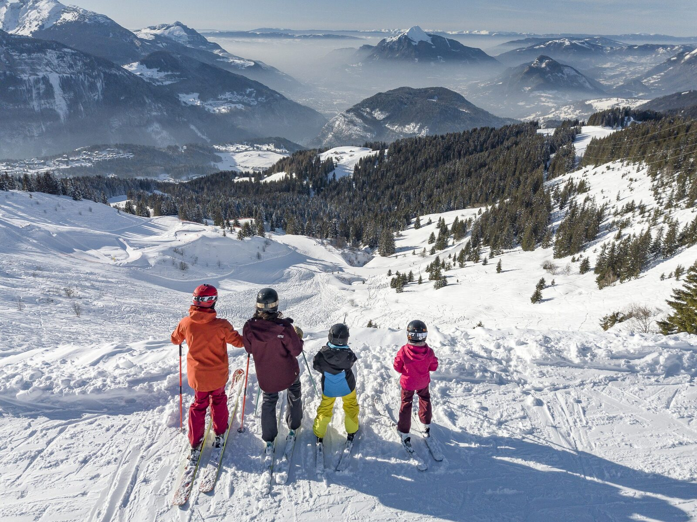

Skier en janvier aux Carroz : pistes calmes et bons plans 2027

Entre la fin des vacances de Noël et le début des vacances d'hiver, il existe une fenêtre que les habitués connaissent bien : janvier. Les files d'attente fondent, les pistes damées restent lisses plus longtemps et l'ambiance de la station redevient villageoise. Voici pourquoi janvier 2027 est un excellent choix pour skier depuis Les Carroz d'Arâches, et comment en profiter.
Une fenêtre de quatre semaines hors vacances scolaires
Le calendrier 2026-2027 dessine clairement cette période creuse. Les vacances de Noël, communes aux trois zones, se terminent le lundi 4 janvier 2027. Les vacances d'hiver ne commencent ensuite que le samedi 6 février 2027 pour la zone C (Paris, Montpellier, Toulouse), le 13 février pour la zone A et le 20 février pour la zone B.
Entre ces deux dates, aucune zone française n'est en congés. Cela laisse environ quatre semaines pleines où le domaine du Grand Massif, avec ses 265 km de pistes et 62 remontées réparties entre Flaine, Les Carroz, Morillon, Samoëns et Sixt, accueille nettement moins de monde que pendant les semaines de vacances.
Ce que janvier change sur les pistes
- Moins d'attente aux remontées : en semaine, vous enchaînez les descentes au lieu de patienter, ce qui compte vite sur une journée de ski.
- Des pistes en meilleur état : moins de passages, donc une neige damée qui garde sa tenue plus tard dans la matinée.
- Des cours de ski plus disponibles : hors vacances, il est plus simple de réserver des cours particuliers ou de caler un créneau qui vous convient.
- Le froid du cœur de l'hiver : janvier est souvent l'un des mois les plus froids en montagne. Prévoyez sous-couches, gants chauds et masque, et profitez des journées de grand beau au-dessus de la mer de nuages.
Des tarifs pensés pour les semaines creuses
Pour l'hiver 2026-2027, la station des Carroz a annoncé plusieurs mesures qui jouent en faveur des séjours hors vacances. Le forfait Proximité à 39 € est réservé à la clientèle régionale, du lundi au vendredi hors vacances scolaires, sur le secteur des Carroz : si vous habitez la région, janvier est précisément la période où il s'applique. Pour les familles, le dispositif Mini-8 ans rend la journée gratuite pour les moins de 8 ans et plafonne les forfaits de 2 à 7 jours à 29 €.
Côté hébergement, les semaines de janvier sont aussi plus souples à réserver que Noël ou février : c'est le bon moment pour viser un appartement avec terrasse sans devoir s'y prendre un an à l'avance. Le détail des forfaits adultes et des dates d'ouverture figure dans notre article Forfaits Grand Massif 2026-2027.
À noter : la Rando sous les étoiles, les 8 et 22 janvier 2027
Janvier a aussi son rendez-vous. L'office de tourisme des Carroz organise la Rando sous les étoiles les vendredis 8 et 22 janvier 2027, de 17 h à 22 h : une montée guidée en ski de randonnée au coucher du soleil depuis le bas de la télécabine, un repas savoyard au restaurant d'altitude, puis une descente aux flambeaux.
- Inscription uniquement en ligne, pas d'inscription sur place.
- Places limitées (150 participants), débutants non acceptés.
- L'édition 2026 affichait complet, et le tarif était de 35 € en prévente. Le tarif 2027 reste à confirmer sur le site de l'office de tourisme : inscrivez-vous tôt.
Si vous débutez en ski de randonnée, notre guide raquettes, ski de fond et ski rando aux Carroz vous aide à choisir l'activité adaptée.
Organiser un séjour de janvier au Lodge
Le Lodge Le Chamois est un appartement de 83 m² pour 6 personnes, avec trois chambres, au 265 route de Flaine, Domaine du Bois Blanc. La télécabine des Carroz est à 5 minutes à pied, et le casier à skis chauffé du rez-de-chaussée garde chaussures et skis au sec, un vrai confort par grand froid. Le parking privé couvert, équipé d'une recharge Green'Up, évite de déneiger la voiture le matin.
Le soir, la terrasse de 45 m², ouverte sur le salon, accueille le brasero et, en option, le bain nordique en bois : rien de tel après une journée par -5 °C. Pour venir, comptez 15 minutes depuis la sortie 19 de l'A40, 50 minutes depuis Genève, ou le Léman Express (L3) jusqu'à Cluses puis la navette « Les Carroz Flaine Express ». Clémentine, notre conciergerie, vous accueille sur place.
Sources : calendrier scolaire 2026-2027 (vacances-scolaires.com) ; office de tourisme des Carroz d'Arâches et Haute-Savoie Mont-Blanc Tourisme ; annonces de la station pour l'hiver 2026-2027. Dates et tarifs susceptibles d'évoluer selon l'enneigement.
Skier en janvier au Lodge ?
Appartement 4★ pour 6 personnes, terrasse de 45 m² et bain nordique, au centre des Carroz d'Arâches. Les semaines de janvier offrent encore du choix.
Voir les disponibilités